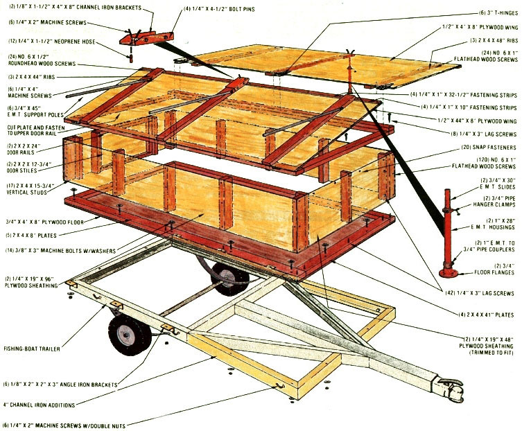
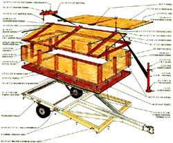

If you've got travel in your blood but only a little cash in your pocket, consider constructing.
I've been a fan of the great outdoors since my youth, but once I became a family man, I had to think about changing the manner in which I visited the wilds. You see, though all of the Pentecost clan enjoys camping, we don't all appreciate middle-of-the-night close encounters with wild critters . . . and needless to say, the prices of recreational trailers have gone far beyond the reach of many folks, including us.
I didn't, however, let a mere lack of funds prevent our traveling around and experiencing the thrill of new and distant places. Rather than shell out hard-earned cash for motel lodging on family jaunts, I figured I'd put a few bucks, and a bit of effort, into building a homemade camping trailer . . . and still have some money left over to spend on a trip. The result of my brainstorm is the "appropriate technology (or APT) camper" pictured here . . . a lightweight, four-berth tent trailer-built from both new and used components-which cost me less than $350!
START AT THE BEGINNING
The heart of my APT Camper is a small, 750-pound-capacity fishing-boat trailer . . . which I picked up, in good condition, for $100. These tag-alongs are typically just under 4 feet wide at the rear and taper inward toward the front. To ready it for camper carrying, I simply welded two Lshaped pieces of 4"-broad lightweight channel iron to the trailer's nose, thus providing a 4-foot-wide structural base at the front of the tapered frame. Since the chassis wasn't quite 4 feet wide at the rear, I also had to weld some 1/8" X 2" X 2" X 3" angle iron brackets to its side rails in that area to support my trailer's 314" X 4' X 8' plywood floor.
After I'd drilled through the brackets and frame members and bored mounting holes in the wooden platform, I started work on the camper's walls. To make them, I first trimmed five 2 X 4's to 8-foot lengths, then cut four 41"-long sections. Seventeen 2 X 4's-measuring 15-3/4" each-served as vertical studs.
Then, using 1/4" X 3" lag screws, I fastened 13 of the studs to their respective top and bottom plates, forming three 19"-tall wall frames . . . which I went on to fasten to the front and side edges of the plywood floor with bolts run through the bottom plates, the wooden platform, and the trailer frame (or the angle iron brackets) beneath. To enclose the camper's tail end, I framed out two 12 "long walls at the rear corners, bolted them to the base as I had the others, and then fastened them to the side walls with lag screws. More screws, placed through the corner studs at the front, helped to make the entire "box" secure.
I covered the wall frames with 1/4" exterior-grade plywood, which I fastened to the studs and plates with No. 6 X 1" wood screws. And finally, I made a 19"-tall, 24 "wide door of 2 X 2's covered with the ply wood skin and attached the portal to the walls in the usual manner, with hinges on one side and a standard lock set on the other.
WING IT
In order to provide the camper with bunk space and a protective lid, I attached two "wings"-made from 4' X 8' sheets of 1/2" plywood-to the top of each long wall with Thinges. One of the wooden sheets was left full size, but the other was cut down to 44" wide to allow it to clear a 2 X 4 spacer I used to mount the first wing. (This spacer-which I fastened to one wall's top plate-raises the full section of plywood enough to let the narrower sheet fold flat beneath it.)
Then, to stiffen the sleeping platforms, I glued and screwed three evenly spaced 2 X 4 ribs across the breadth of each wing, one near each end and another in the middle, using No. 6 X 1 " flathead wood screws countersunk into the plywood's surface.
The wooden wings-when extended-are further held in place by a total of six 3/4" E.M.T. support poles (three per side) fastened between the ends of the ribs and the trailer frame. After cutting the rods to about 45" in length, I flattened one end of each section, drilled a 1/4" hole through the metal at that point, and locked a 1/4" X 4" machine screw into each opening. Then I bored six 1/4" holes-each in line with one rib-through the side of the trailer's chassis, and tightened 1/4" X 2" bolts into the openings, threaded ends out, using double nuts. After bending the bolts upward slightly, I slipped short pieces of 1/4" neoprene hose over the studs to assure a snug fit.
With the support poles on their respective studs, I temporarily shored up the plywood wings so they were level, positioned the bolts on the ends of the supports against the ribs, and drilled horizontal 1/4" holes through the 2 X 4's at the points I'd marked. By slipping the support bars' bolts through the crosswise bores, I could be sure that each wing was firmly secured.
At this point I had a "winged" camper . . . that would still tip sideways if someone were to sit on one edge. So, to solve that problem, I cut two 28" lengths of 1" E.M.T. and two 30" pieces of 3/4" electrical conduit . . . and drilled a 1/4" hole through the side of each 1 " section, about an inch from the end. By securing 3/4" pipe hanger clamps to the drilled E.M.T. so that the threaded collars were in line with the bores, I could slide the smaller-diameter tubes inside the larger ones and hold each one fast by a bolt (bent at a right angle) tightened through the clamp to press against the inner conduit section.
To make a foot for each of the telescoping supports, I just purchased a pair of 1 " E.M.T. to 3/4" pipe couplers and two 3/4" floor flanges, and fastened them to the bottom of each pole.
Then, to secure the supports at their upper ends (as well as to provide an attaching point for the exterior tent poles), I cut two 8" lengths of the channel I'd used to extend the frame and drilled seven 1/4" holes through each piece . . . two pairs in line through the part's shoulders-about 4" apart and toward one end-and three in a triangular pattern in the base at the opposite end, as shown in the drawing.
By placing the brackets over the ends of the central ribs and drilling through the shoulder holes and the wood between them, I was able to slide some 1/4" bolts into the openings to serve as fastening pins. Likewise, 1/4" X 2" bolts-secured to the brackets' remaining holes in a two-up, one-down arrangement and covered with more fuel line-provided tent pole and support mounts. (The brackets, poles, and other loose hardware can be stored in the bed of the camper when not in use.)
Several coats of exterior paint, applied to all the wooden surfaces (both inside and out), protected the camper's skin and gave it a real quality-built look, too.
FROM CABIN TENT TO CAMPER
I found that actually installing the tent was a simple-and satisfying-task. My 9' X 12' exterior-frame unit fit the camper just about perfectly, though I had to cut the canvas floor out to allow access to the center bunk area. (I used the scrap to stitch up a snap-in-place weatherproof tarp that protects the trailer when it's towed.)
I merely spread the tent out in place-making sure its door lined up with the camper's entrance-then worked around the perimeter, pulling the canvas walls so they hung over the platform an equal distance all around. By holding the edges temporarily with C-clamps, I was able to set the shelter up and secure an inch or two of folded-over canvas to the underside of the wings, using strips of 1/4" plywood ripped to 1" widths and held on with 1/2" wood screws. Then, to attach the tent to the front and back walls, I simply installed sturdy snap fasteners.
Click here to enlarge
That's about all there was to it, too. Of course, you may want to add some extra "goodies" to your own APT Camper, should you choose to build one (I've included foam mattress pads, an electrical outlet, and a small cabinet in mine), but you can get along quite nicely with the simple setup I've described here. Don't be afraid to improvise, though . . . if you already have a tent, by all means build your camper to suit it, even if it's an odd size. There's nothing like "making do" to save money.
EDITOR'S NOTE: For those who may not feel confident building their own APT Camper just from the descriptions given in this article, the author is offering a construction guide that includes drawings and a materials list. It's available for $10 from Robert Pentecost, Dept. TMEN, 1138 Garden Row, Louisville, Kentucky 40213.
Check your state's motor vehicle regulations concerning registration and insurance of a towed camping trailer before you build.
|
 |
 |
|